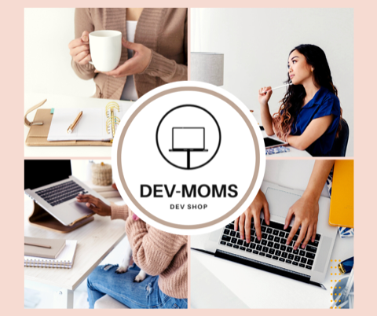

DevMoms
Co-Founder and Program Director
Developed DevMoms, an extension program of Tech-Moms to accelerate the job experience for Tech Mom graduates who want to use their skills after graduation in web development, project management, or UI/UX through website contract work with small businesses. The DevMoms training program teaches women Waterfall and Agile methodologies to manage projects while staying customer-centric, ensuring the customer journey is on time, on budget, and meets business requirements.